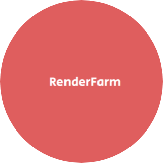

|
|  | Responsive WebPage: RenderFarmAbout the ProjectThis page is about a hypothetical software which allows the 3D graphic designers, engineers etc to render their project on cloud servers. To promote this product, this particular page was made. Responsive as in when this site is viewed from different aspect ratios or devices, the website would still look intact without many problems! This site is inspired by TinDog, using the same concepts I could build my own site. Note: Project Link is given at the bottom of the page [WebPage Link] Click here. |
BootStrap 5Used bootstrap-5 framework for making the page responsive and other things:
CSS & HTMLUsed HTML to structure the webpage, for various bootstrap features. Also CSS was used for using advanced manipulation using Z-Indexes and media queries. Screenshots
|
|
|

|
GitHub Link of the project (Click Me!)Click on the heading to see the project uploaded on GitHub for more information. |